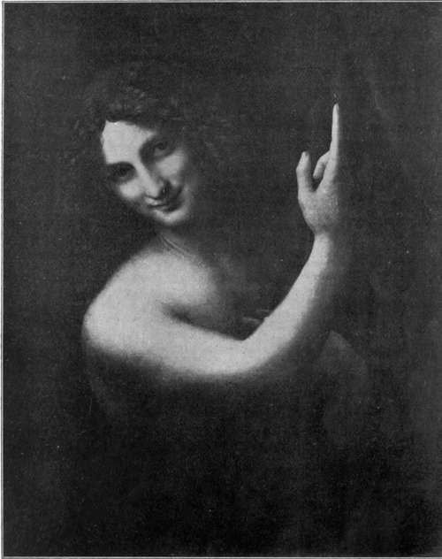

The Pictures. Part 15
Description
This section is from the book "Leonardo Da Vinci", by Edward McCurdy. Also available from Amazon: Leonardo Da Vinci.
The Pictures. Part 15
A study of drapery for the lower half of the dress of the Virgin, in the Louvre, has been worked on by a later hand, but the rhythm of the folds may serve to show how the picture, which is in this part least completed, would have progressed. Also connected with it are several studies of drapery at Windsor, among them being one for the right arm of the Virgin, in which the light gauze drapery encircles the arm like rings of wreathing smoke.1
A drawing of a head in black chalk at Windsor2 may be a study for S. Anne. The head-dress, the pose, the expression of the smiling mouth, the deep lozenge of the upper eyelid with its resultant effect of dreaminess, all serve to connect it with the Louvre composition.
The background of the picture is the sunniest of his landscapes; hills like fleecy clouds, and to the right the dark ridges of the ash are like bars across the light.
In this, in the head of S. Anne, in the bending figure of the Virgin, his art still reveals its full maturity.
But, as a whole, in effect the composition suffers somewhat by the precision of its structure. The positions seem chosen as incidental to a mathematical diagram, to the representation of which the creative artistic purpose is subsidiary.
1 It is reproduced in the " Jahrbuch," XX.; M.-W., Bei. V.
2 Braun, 223.
S. Anne, as the apex of the triangle, dominates and dwarfs the rest. As an ageless sibyl she looks down upon the Virgin and Child who seem by contrast the creatures of a day. There is some inevitable loss of dignity in the representation of a full-grown woman seated in the lap of another. So he has made her a mother playing with her child, and it is S. Anne who Atlas-like supports the whole, in whose face he has attempted to portray the mystery of these things.
Of the origin of a picture of S. John the Baptist records are slight. It was apparently not a commission.
Of the early biographers only the writer of the " Book of Billi" and the " Anonimo Fiorentino " mention it- adding nothing to the bare statement.
A S. John the Baptist as a Youth was one of the pictures seen by the Cardinal of Aragon at Amboise in October, 1517.
There are sufficient versions of the composition of the Louvre picture and variants of it, to presuppose a common source. It is directly connected with Leonardo by the existence of a sketch in black chalk of the thumb and raised forefinger of the right hand, the rest of the hand being faintly drawn in outline, on a sheet containing mathematical notes and diagrams and two sketches of animals.1
But the question of the authenticity of the Louvre picture rests almost entirely upon the evidence of the picture itself. Neither Morelli nor Mr. Berenson include it in the list of Leonardo's works. I can do but scant justice to the faith that is within me; but I believe it to be an authentic and characteristic work.
1 C A., 179 r.
Plate 41. S. John The Baptist
Neurdein photo - The Louvre
The modelling of the hand and forearm has a quality which it is impossible to connect with the work of any pupil. As supple, as soft, as delicate as is the treatment of the nude, either of Luini, Sodoma or Gianpietrino, it has a firmness and virility far in excess of their attainment.
The position of the figure seen in relief against a dark background seems as though chosen to afford the painter an opportunity of displaying to the full his profound knowledge of chiaroscuro.
Indeed, in the last years of his life his intermittent practice of art was mainly as the vehicle of the expression of his interest in its underlying scientific principles. This perhaps in part accounts for the comparative lack of preparatory drawings for the later works.
The S. John was prepared for, through as tentative stages as any other, but these found their place in the treatise on " light and shade."
The half-length figure, nude save for the girdle of camel's hair, peering out of the gloom, is certainly the most luminous, and in a sense the most mystic of his works. The light streams full upon the oval of the brow, touches and transmutes to gold the auburn tresses, points the fine oval of the face, and rounds with exquisite gradation the shoulder, forearm, and the uplifted hand. The eyes and subtly smiling mouth are in shadow. So plastic is the figure that the flesh seems to recede from contact with the light with suggestion of soft curve of outline that imperceptibly grows one with the impalpable shadow.
The type of face might be of either sex. It has a strong resemblance to the S. Anne in the pronounced oval, the high cheek bones, the long aquiline nose, the arched quivering mouth and mysterious smile, and the arrangement of the shadow. Entirely Leonardesque in conception is the attitude of the hand, recalling a like motive in the Academy Cartoon and in the Last Supper.
The body seems to be swaying, and with exquisite art the poise of the head balances the lifted hand.
It would serve to represent the figure of a Maenad in revelry rather than of the Baptist, were it not for the cross of reed! And the cross is in deep shadow, and lightly forgotten amid the wayward suggestions of the smile.
On the same sheet of manuscript as the sketch for the right hand is a sketch apparently for the automatic lion which, according to Vasari, Leonardo made when the King of France came to Milan. Lomazzo says King Francis I., but the occasion was more probably that of the triumphal entry of Louis XII. in July, 1509. We may infer the drawing for the right hand to be of approximately similar date, but some time may have elapsed before the execution of the picture. Presumably it was that seen by the Cardinal of Aragon in 1517.
There is no evidence of when it passed into the Royal Collection.
Both Cassiano del Pozzo (1625) and Pere Dan (1642) include among the pictures by Leonardo at Fontainebleau a S. John in the Desert.
That this picture is not the Louvre S. John but the Bacchus, which certainly cannot be regarded as a work of Leonardo's, is evident from the text of Cassiano del Pozzo's description: " La figura minor un 3º del vero, e opera dilicatissima ma non piace molto, perche non rende punto di devotione ne ha decoro, o verisimili-tudine e assiso a sedere, vi si vede sasso e verdura di paese con aria."1
Pere Dan gives no description, but it is only reasonable to interpret the S. John in the Desert in the two categories as having reference to the same picture.
Moreover, the 5. John in all probability had already gone to England at the time of Pere Dan's visit. It was sent by Louis XIII. to Charles I. in exchange for a portrait of Erasmus by Holbein and a Holy Family by Titian. Its sojourn in England was of brief duration. It came under the hammer with the major part of Charles I.'s collection of pictures, was bought by the French banker Jabach for £140, and was presented by him to Louis XIV.
1 Vatican. MSS. Barberini LX. 64. f. 193 a. (I am indebted for the quotation to the kindness of Mr. G. McNeil Rushforth, late Director of the British School of Rome.)
Continue to:
- prev: The Pictures. Part 14
- Table of Contents
- next: Catalogue Of The Pictures by Leonardo Da Vinci. British Isles
Tags
leonardo da vinci, pictures, drawings, galleries, statues, da vinci